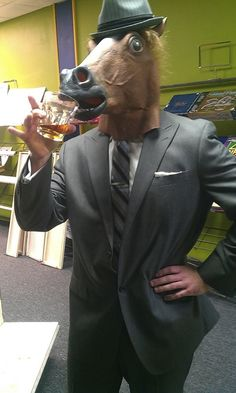

Olá, viajante! Me chamo Marcelo Gallo, sou um pesquisador e desenvolvedor entusiasta da sustentabilidade e tecnologia verde! Tenho experiencia com sistemas embarcados e aplicações Web.
Em meu tempo livre gosto de ler, aprender sobre as tecnologias tendencias, inventar (tomar muitos choques) ouvir musica e cozinhar.
Na minha experiencia pessoal, julgo que não há nada dificil suficiente que não é passiva de ser aprendida. Tenho apreço pela programação, possuindo conhecimentos sólidos de PHP, html, CSS. Ademais, C++ tem um percentual grande de meus conhecimentos por ser onde comecei meus estudos e onde estou atuando atualmente na pesquisa.
Caso tenha interesse eu meu trabalho, pode conferir em meu GitHub.